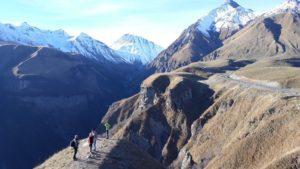
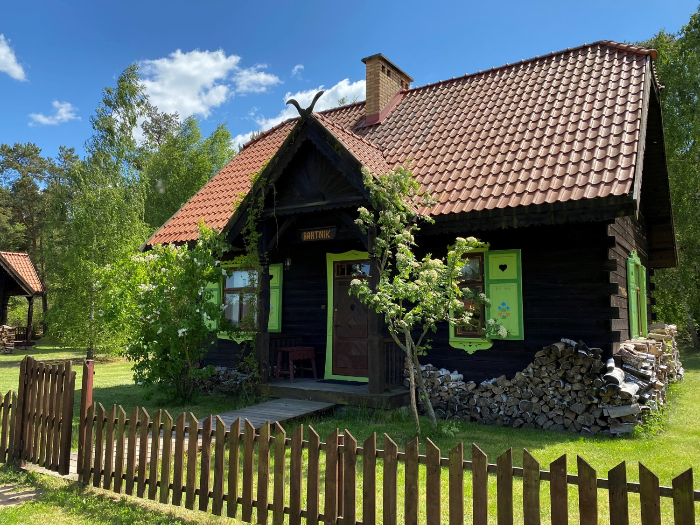

Więzienie Camp Bucca i jego znaczenie dla powstania Państwa Islamskiego (ISIS)
20 lipca 2020
Mali – protesty społeczne i negocjacje z grupami zbrojnymi
3 lipca 2020
Polska dziennikarka wyjaśnia dlaczego producenci żywności i rolnicy nie chcą, żebyśmy wiedzieli, czym jest glifosat. Kim jest Żaneta Geltz i dlaczego to robi?
16 czerwca 2020
Raporty
Więzienie Camp Bucca i jego znaczenie dla powstania Państwa Islamskiego (ISIS)
20 lipca 2020
Geneza konfliktu w Burkina Faso w latach 2014-2019
26 maja 2020
Anders Breivik – co popchnęło go do mordu na własnych rodakach?
28 kwietnia 2020
Masakra w szkole w Columbine… Czy polskie szkoły są bezpieczne?
19 kwietnia 2020
Somalia. Od zalążków państwowości, przez kolonizację, dekolonizację, po dyktaturę
23 stycznia 2020
Geneza powstania oraz ewolucja działalności terrorystycznej Al-Kaidy Islamskiego Magrebu (AQIM)
13 listopada 2019
Analizy
Mali – protesty społeczne i negocjacje z grupami zbrojnymi
3 lipca 2020
Mali – porwanie lidera opozycji Soumaïlli Cisségo i walki pomiędzy JNIM a ISGS
24 maja 2020
Rwanda, konflikt niedokończony….
5 maja 2020
Task Force Takuba – nowe siły w rejonie Sahelu
15 kwietnia 2020
Projekt Afryka
Oferta szkoleniowa
Podmioty współpracujące
DZIEŃ BEZPIECZEŃSTWA
27
Przeszkolone szkoły
11669
Przeszkoleni uczniowie
1254
Przeszkoleni nauczyciele
339
Przeszkoleni pracownicy szkół
Szkolenia
DZIEŃ BEZPIECZEŃSTWA W SZKOLE
SZKOLENIE
FILM
POLSKI SYSTEM KONTROLI EKSPORTU
JAK DZIAŁA NATO
BEZPIECZEŃSTWO W BIZNESIE
BEZPIECZEŃSTWO TELEINFORMATYCZNE
SZKOLENIE MEDYCZNE
SZKOLENIA Z ZAKRESU CYBERBEZPIECZEŃSTWA
DORADZTWO GOSPODARCZE OIN
DOKUMENTACJA OIN – OGÓLNA
RODO – AUDYT+DOK.
RODO – SZKOLENIE
Bezpieczeństwo w szkole
Przygotowania do zamachu na szkołę w Rosji
16 czerwca 2020
Atak nożownika na szkołę w Słowacji – czy musiało do niego dojść…?
14 czerwca 2020
Masakra w szkole w Columbine… Czy polskie szkoły są bezpieczne?
19 kwietnia 2020
Bezpieczeństwo w szkołach – konferencja w Nietążkowie
27 lutego 2020
Turystyka międzynarodowa
Ghana. Kraj po prostu pozytywny
20 Kwiecień 2020
Kazachstan – kraj piękny i różnorodny
29 Sierpień 2019
Kirgistan – woda i góry w jednym
29 Sierpień 2019
Rwanda – Park Narodowy Akagera
29 Sierpień 2019

Gruzja – turystyka, doświadczenia i wnioski
29 Sierpień 2019
Etiopia – pomiędzy stereotypami a rzeczywistością
29 Sierpień 2019
Filmy
Zdjęcia
Turystyka w Polsce

Piękno Podlasia – Architektura (film)
15 czerwca 2020
Piękno Podlasia – Religie Podlasia (film)
15 czerwca 2020
Piękno Podlasia – Przyroda (film)
15 czerwca 2020
Media o nas
Jak pandemia koronawirusa wpłynie na sytuację na świecie?
Radio Plus
Był odpowiedzialny za bezpieczeństwo około 2 tys. żołnierzy z ponad 20 państw.
Hipoalergiczni
Szkoły nie są bezpieczne. W Kielcach zastanawiano się, jak to poprawić